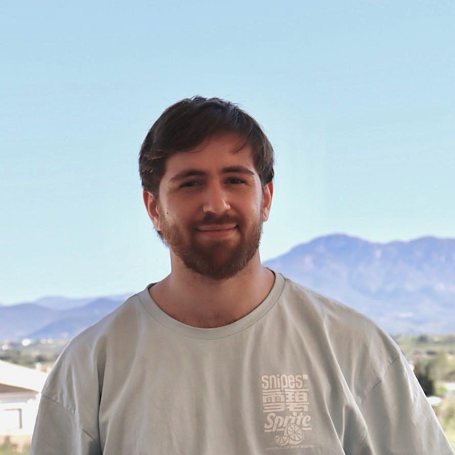

Optical Engineer · R&D Photonics · València, Spain
Designing instruments that measure light itself —
specialised in Digital Holographic Microscopy
and near-infrared optical systems.

I'm an Optical Engineer with a Master's in Advanced Physics (Photonics) from the University of Valencia. My work sits at the intersection of experimental optics, computational imaging, and precision metrology.
My MSc thesis — awarded with maximum grade — documents the full design and implementation of a telecentric NIR Digital Holographic Microscope capable of characterising nano-structured metasurfaces with sub-wavelength phase sensitivity, within the EU-funded DISCAMNIL project.
I enjoy building from scratch: aligning optical benches, writing reconstruction pipelines, and turning raw interference fringes into quantitative phase maps.
Four core competencies, each illustrated with representative experimental images.
Add images in script.js → FOCUS_AREAS[n].image.
Planned papers, ongoing research lines, and upcoming publications.
Open to research collaborations, PhD opportunities, and R&D roles
in photonics, optical engineering, and computational imaging.